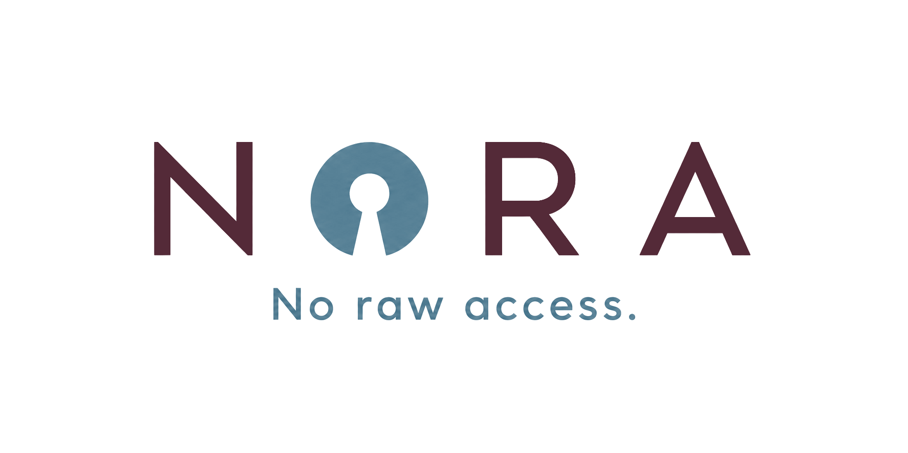
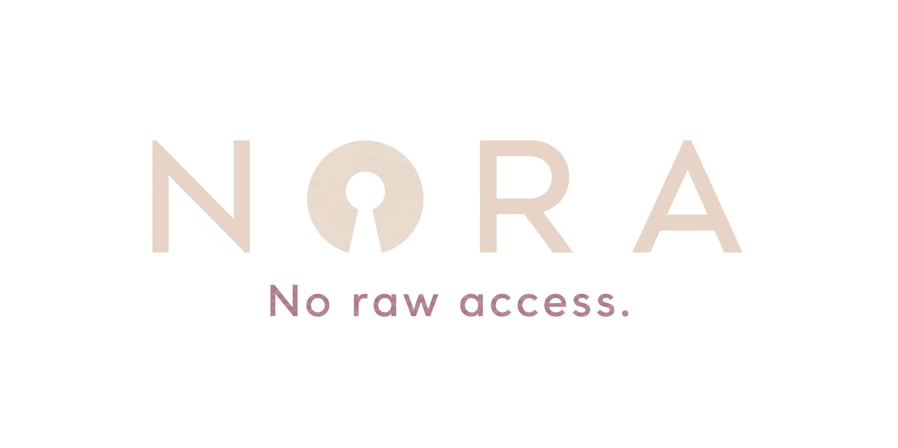

Nora drives a frontier model against your data. Pick at least one provider and paste an API key. Keys are stored in your macOS Keychain, never on disk in cleartext.
claude in a terminal); the subscription
path is detected automatically.
Choose the data files you want Nora to help you analyze. They stay on this machine. Nora only sees schema and disclosure-controlled summaries.
Drop .csv, .tsv, .dta, .rds, .parquet, or .jsonl files
For files larger than 1 GB, use Choose files
Sent directly to Nora's builder. Only this note leaves your machine. Chat history and datasets stay local. Don't paste raw data, rows, identifiers, credentials, or full logs.